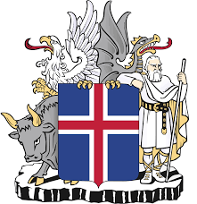
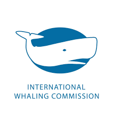
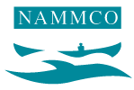

<!DOCTYPE html>

<html lang="en"></html>
<h2>Advice</h2>
<head>
    <link rel="stylesheet" href="Styles.css">
</head>
<body>
  <div class="table_rsm"></div>
  <table class="table_rsm">
    <tr>
      <td></td>
      <td>
        <b>Government of Iceland,</b> 
        <br>&ensp;&bull; Redfish (<i>Sebastes mentella</i> and <i>S. marinus</i>)
        </td>    
    </tr>
    <tr>
      <td></td>
      <td>
        <b>International Council for the Exploration of the Sea</b>
        <br>&ensp;&bull; Redfish (<i>Sebastes mentella</i> and <i>S. marinus</i>)
        </td>    
    </tr>
    <tr>
      <td></td>
      <td>
        <b>International Whaling Commission</b>
        <br>&ensp;&bull; Fin whale (<i>Balaenoptera physalus</i>) and minke whale (<i>Balaenoptera acutorostrata</i>)
        </td>    
    </tr>
    <tr>
      <td></td>
      <td>
        <b>North Atlantic Marine Mammal Commission</b>
        <br>&ensp;&bull; Fin whale (<i>Balaenoptera physalus</i>)
        </td>    
    </tr>
    </table>
</body>
</html>